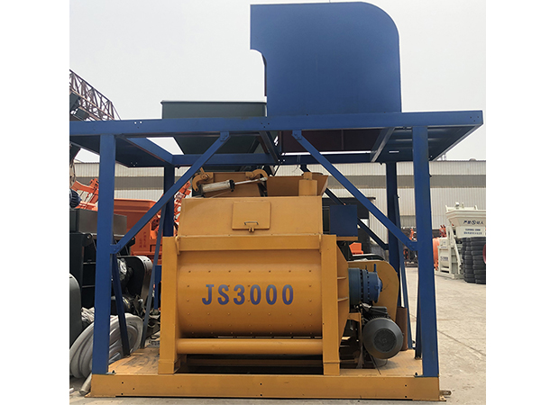

| Model | JS3000 |
| Feed Capacity | 4800 L |
| Discharge Capacity | 3000 L |
| Mixing Power | 55KW x 2 |
| Cycle Time | 40 seconds |
| Brand | Yuda Concrete |
Features
- Twin-shaft forced mixing for superior concrete quality
- High-strength wear-resistant lining plates
- Short mixing cycle time for maximum productivity
- Easy maintenance access to mixing drum and blades
- Used in HZS180/HZS240 batching plants